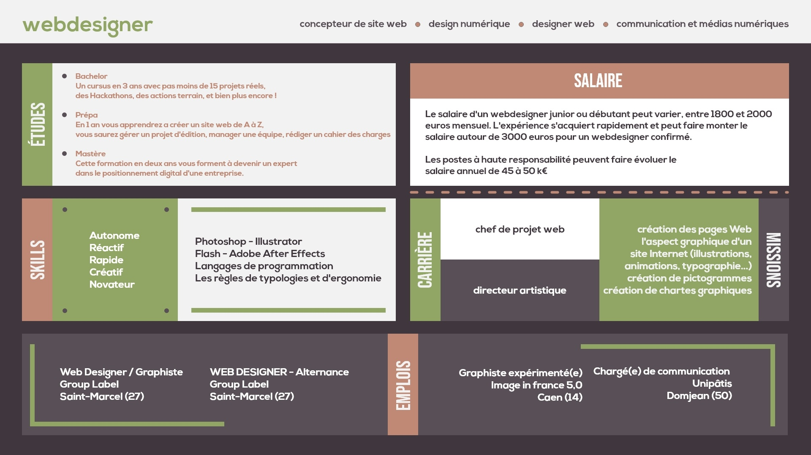

Fiche métier du Webdesigner

J’ai crée cette fiche métier pour présenter ce qu’est un « webdesigner » aux personnes de ma classe. J’ai décidé de le présenter graphiquement sous forme d’une page Web afin de faire rappelé dans quelle domaine s’exerce cette profession qui est le monde du digital. Les couleurs que j’ai sélectionné pour cette réalisation sont principalement des couleurs faisant rappelé la nature puisque dans l’univers du digital il doit pensé également à l’environnement.